Classes 'nfnGroupedData', 'nfGroupedData', 'groupedData' and 'data.frame': 84 obs. of 5 variables:
$ Plant : Ord.factor w/ 12 levels "Qn1"<"Qn2"<"Qn3"<..: 1 1 1 1 1 1 1 2 2 2 ...
$ Type : Factor w/ 2 levels "Quebec","Mississippi": 1 1 1 1 1 1 1 1 1 1 ...
$ Treatment: Factor w/ 2 levels "nonchilled","chilled": 1 1 1 1 1 1 1 1 1 1 ...
$ conc : num 95 175 250 350 500 675 1000 95 175 250 ...
$ uptake : num 16 30.4 34.8 37.2 35.3 39.2 39.7 13.6 27.3 37.1 ...
- attr(*, "formula")=Class 'formula' language uptake ~ conc | Plant
.. ..- attr(*, ".Environment")=<environment: R_EmptyEnv>
- attr(*, "outer")=Class 'formula' language ~Treatment * Type
.. ..- attr(*, ".Environment")=<environment: R_EmptyEnv>
- attr(*, "labels")=List of 2
..$ x: chr "Ambient carbon dioxide concentration"
..$ y: chr "CO2 uptake rate"
- attr(*, "units")=List of 2
..$ x: chr "(uL/L)"
..$ y: chr "(umol/m^2 s)"8. Estatística com R
Na prática
Introdução à estatística com R
Objetivo da aula:
Compreender e aplicar conceitos fundamentais de estatística descritiva e inferencial utilizando a linguagem R para análise de dados experimentais.
Conteúdo programático:
- Estatística descritiva: medidas de tendência central e dispersão
- Distribuições de probabilidade e testes de normalidade
- Análise de variância (ANOVA)
- Interpretação de resultados e visualização de dados
Dataset CO2: contexto experimental
Experimento de tolerância ao frio em plantas
Estudo sobre a absorção de CO2 em plantas de Echinochloa crus-galli (capim-arroz) submetidas a diferentes condições de temperatura.
Design experimental:
- 12 plantas (6 de Quebec, 6 de Mississippi)
- 2 tratamentos: resfriadas (chilled) e não resfriadas (nonchilled)
- 7 níveis de concentração de CO2
- Medida: taxa de absorção de CO2
Carregamento e exploração inicial
Visualização das primeiras observações
Plant Type Treatment conc uptake
1 Qn1 Quebec nonchilled 95 16.0
2 Qn1 Quebec nonchilled 175 30.4
3 Qn1 Quebec nonchilled 250 34.8
4 Qn1 Quebec nonchilled 350 37.2
5 Qn1 Quebec nonchilled 500 35.3
6 Qn1 Quebec nonchilled 675 39.2
7 Qn1 Quebec nonchilled 1000 39.7
8 Qn2 Quebec nonchilled 95 13.6
9 Qn2 Quebec nonchilled 175 27.3
10 Qn2 Quebec nonchilled 250 37.1Resumo estatístico inicial
Plant Type Treatment conc uptake
Qn1 : 7 Quebec :42 nonchilled:42 Min. : 95 Min. : 7.70
Qn2 : 7 Mississippi:42 chilled :42 1st Qu.: 175 1st Qu.:17.90
Qn3 : 7 Median : 350 Median :28.30
Qc1 : 7 Mean : 435 Mean :27.21
Qc3 : 7 3rd Qu.: 675 3rd Qu.:37.12
Qc2 : 7 Max. :1000 Max. :45.50
(Other):42 [1] 84 5Pacotes necessários
1. Estatística descritiva
Conceitos fundamentais
Estatística descritiva é o ramo da estatística que organiza, resume e apresenta dados de forma informativa, sem fazer inferências além dos dados observados.
Principais componentes:
- Medidas de tendência central: valores típicos ou centrais
- Medidas de dispersão: variabilidade dos dados
- Medidas de posição: localização relativa dos dados
- Medidas de forma: simetria e achatamento da distribuição
Medidas de tendência central
Definições matemáticas:
Média aritmética: \[\bar{x} = \frac{1}{n}\sum_{i=1}^{n}x_i\]
Mediana: valor que divide o conjunto ordenado ao meio
Moda: valor mais frequente
Calculando medidas de tendência central
Interpretação das medidas centrais
Resultado obtido:
- Média de 27.21 μmol/m²s indica absorção moderada
- Mediana de 28.30 sugere distribuição aproximadamente simétrica
- Amplitude de 37.8 unidades (7.7 a 45.5) mostra variabilidade considerável
Medidas de dispersão: conceitos
Variância: média dos quadrados dos desvios \[s^2 = \frac{1}{n-1}\sum_{i=1}^{n}(x_i - \bar{x})^2\]
Desvio padrão: raiz quadrada da variância \[s = \sqrt{s^2}\]
Coeficiente de variação: dispersão relativa \[CV = \frac{s}{\bar{x}} \times 100\%\]
Calculando medidas de dispersão
Calculando coeficiente de variação
Interpretação das medidas de dispersão
Resultados obtidos:
O CV de aproximadamente 41.5% indica variabilidade moderada a alta, esperada em dados experimentais biológicos. O desvio padrão de 11.3 representa cerca de 41% da média, sugerindo heterogeneidade nas respostas das plantas.
Medidas de posição: quartis
Identificação de outliers
# Identificar outliers pelo critério IQR
Q1 <- quantile(CO2$uptake, 0.25)
Q3 <- quantile(CO2$uptake, 0.75)
iqr <- IQR(CO2$uptake)
limite_inferior <- Q1 - 1.5 * iqr
limite_superior <- Q3 + 1.5 * iqr
outliers <- CO2$uptake[CO2$uptake < limite_inferior |
CO2$uptake > limite_superior]
outliersnumeric(0)Estatísticas descritivas completas
Estatísticas por grupo
# Estatísticas por grupo
CO2 %>%
group_by(Type, Treatment) %>%
summarise(
n = n(),
Media = mean(uptake),
Mediana = median(uptake),
DP = sd(uptake),
Min = min(uptake),
Max = max(uptake),
Q1 = quantile(uptake, 0.25),
Q3 = quantile(uptake, 0.75),
.groups = "drop")# A tibble: 4 × 10
Type Treatment n Media Mediana DP Min Max Q1 Q3
<fct> <fct> <int> <dbl> <dbl> <dbl> <dbl> <dbl> <dbl> <dbl>
1 Quebec nonchilled 21 35.3 39.2 9.60 13.6 45.5 32.4 41.8
2 Quebec chilled 21 31.8 35 9.64 9.3 42.4 27.3 38.7
3 Mississippi nonchilled 21 26.0 28.1 7.40 10.6 35.5 22 31.1
4 Mississippi chilled 21 15.8 17.9 4.06 7.7 22.2 12.5 18.9Visualização: histograma com densidade
hist1 <- ggplot(CO2, aes(x = uptake)) +
geom_histogram(aes(y = after_stat(density)),
bins = 15,
fill = "#4A6FA5",
color = "#224573",
alpha = 0.7) +
geom_density(color = "#6B4F4F",
linewidth = 1.5) +
geom_vline(aes(xintercept = mean(uptake)),
color = "#224573",
linetype = "dashed",
linewidth = 1,
alpha = 0.8) +
geom_vline(aes(xintercept = median(uptake)),
color = "#6B4F4F",
linetype = "dotted",
linewidth = 1,
alpha = 0.8) +
labs(title = "Distribuição da absorção de CO2",
subtitle = "Linha tracejada: média | Linha pontilhada: mediana",
x = "Absorção de CO2 (μmol/m²s)",
y = "Densidade") +
theme_classic(base_size = 14) +
theme(
plot.title = element_text(color = "#224573", face = "bold"),
plot.subtitle = element_text(color = "#6B4F4F"),
panel.grid.minor = element_blank())Visualização: histograma com densidade(cont)
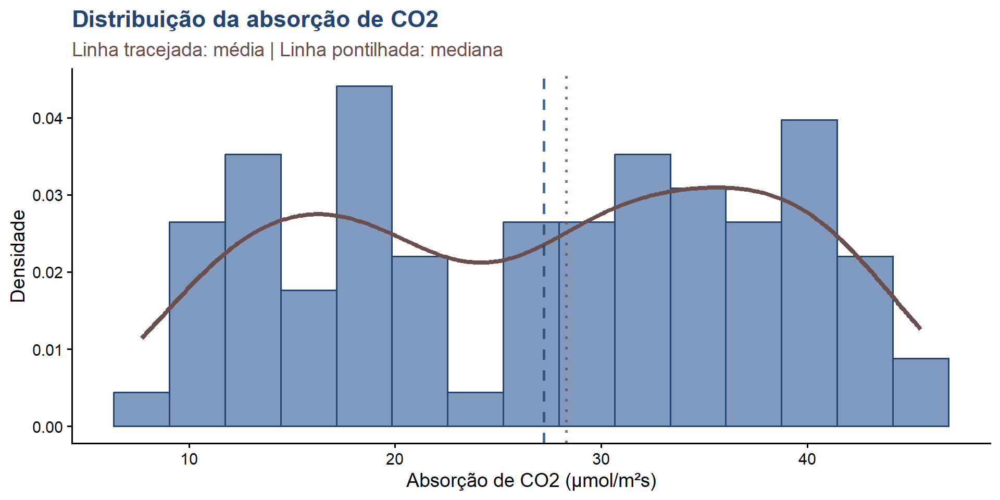Visualização: boxplot por grupos
box1 <- ggplot(CO2, aes(x = Type, y = uptake, fill = Treatment)) +
geom_boxplot(alpha = 0.7,
outlier.color = "#6B4F4F",
outlier.size = 2) +
scale_fill_manual(values = c("#4A6FA5", "#E5D3B3"),
labels = c("Não resfriada", "Resfriada")) +
labs(title = "Absorção de CO2 por origem e tratamento",
x = "Origem da planta",
y = "Absorção de CO2 (μmol/m²s)",
fill = "Tratamento") +
theme_classic(base_size = 14) +
theme(
plot.title = element_text(color = "#224573", face = "bold"),
legend.position = "bottom",
panel.grid.major.x = element_blank())Visualização: boxplot por grupos(cont)
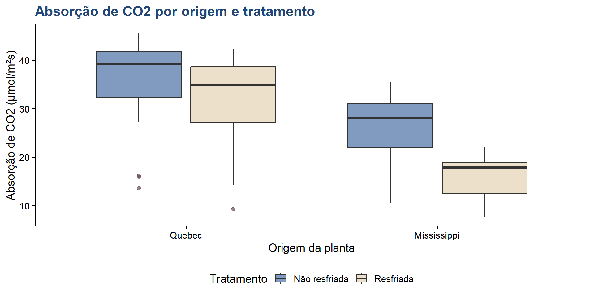Visualização: violin plot
violin1 <- ggplot(CO2, aes(x = Type, y = uptake, fill = Type)) +
geom_violin(alpha = 0.6, trim = FALSE) +
geom_boxplot(width = 0.2,
fill = "white",
alpha = 0.8,
outlier.color = "#6B4F4F") +
scale_fill_manual(values = c("#224573", "#4A6FA5")) +
labs(title = "Distribuição da absorção por origem",
subtitle = "Violin plot com boxplot sobreposto",
x = "Origem da planta",
y = "Absorção de CO2 (μmol/m²s)") +
theme_classic(base_size = 14) +
theme(
plot.title = element_text(color = "#224573", face = "bold"),
legend.position = "none")Visualização: violin plot(cont)
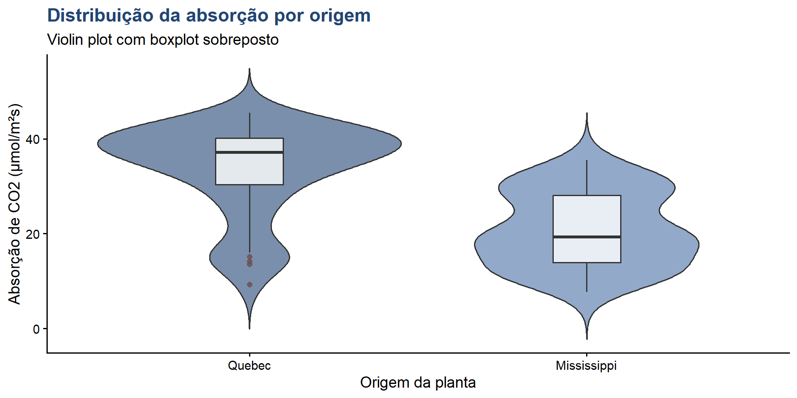2. Distribuições de probabilidade
Conceito de distribuição normal
Distribuição normal (gaussiana):
Distribuição contínua simétrica em forma de sino, caracterizada por dois parâmetros: média (μ) e desvio padrão (σ).
Função densidade de probabilidade: \[f(x) = \frac{1}{\sigma\sqrt{2\pi}}e^{-\frac{1}{2}(\frac{x-\mu}{\sigma})^2}\]
Conceito de distribuição normal(cont)
Propriedades importantes:
- Simétrica em torno da média
- Média = Mediana = Moda
- 68% dos dados entre μ ± σ
- 95% dos dados entre μ ± 1.96σ
- 99.7% dos dados entre μ ± 3σ (regra empírica)
Importância da normalidade
Por que testar normalidade?
Muitos testes estatísticos paramétricos assumem que os dados seguem distribuição normal:
- Teste t de Student
- ANOVA (análise de variância)
- Regressão linear
- Intervalo de confiança para média
Importância da normalidade(cont)
Consequências da violação:
- Resultados não confiáveis
- Aumento do erro tipo I (falso positivo)
- Perda de poder estatístico
Métodos para avaliar normalidade
1. Métodos gráficos:
- Histograma com curva normal sobreposta
- Q-Q plot (quantile-quantile)
- Gráfico de densidade
2. Métodos numéricos:
- Teste de Shapiro-Wilk
- Teste de Kolmogorov-Smirnov
- Teste de Anderson-Darling
- Medidas de assimetria e curtose
Gráfico Q-Q plot
qq1 <- ggplot(CO2, aes(sample = uptake)) +
stat_qq(color = "#4A6FA5", size = 2, alpha = 0.6) +
stat_qq_line(color = "#224573", linewidth = 1) +
labs(title = "Q-Q plot: absorção de CO2",
subtitle = "Normalidade da variável resposta (análise exploratória)",
x = "Quantis teóricos",
y = "Quantis amostrais") +
theme_classic(base_size = 14) +
theme(
plot.title = element_text(color = "#224573", face = "bold"),
plot.subtitle = element_text(color = "#6B4F4F"))Gráfico Q-Q plot(cont)
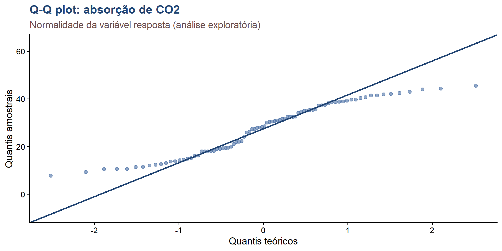Teste de Shapiro-Wilk
Hipóteses:
- H0: os dados seguem distribuição normal
- H1: os dados não seguem distribuição normal
Critério de decisão:
- Se p-valor > 0.05: não rejeita H0 (normalidade)
- Se p-valor ≤ 0.05: rejeita H0 (não normalidade)
Aplicando teste de Shapiro-Wilk
Shapiro-Wilk por grupo
# Por grupo
CO2 %>%
group_by(Type, Treatment) %>%
summarise(
Shapiro_W = shapiro.test(uptake)$statistic,
p_valor = shapiro.test(uptake)$p.value,
.groups = "drop")# A tibble: 4 × 4
Type Treatment Shapiro_W p_valor
<fct> <fct> <dbl> <dbl>
1 Quebec nonchilled 0.825 0.00164
2 Quebec chilled 0.853 0.00477
3 Mississippi nonchilled 0.855 0.00523
4 Mississippi chilled 0.948 0.315 Teste de Anderson-Darling
Anderson-Darling normality test
data: CO2$uptake
A = 1.5793, p-value = 0.0004271# Teste de Kolmogorov-Smirnov
ks.test(CO2$uptake, "pnorm",
mean = mean(CO2$uptake),
sd = sd(CO2$uptake))
Asymptotic one-sample Kolmogorov-Smirnov test
data: CO2$uptake
D = 0.1077, p-value = 0.2842
alternative hypothesis: two-sidedAssimetria e curtose
# Calcular assimetria (skewness)
skewness <- Skew(CO2$uptake)
# Calcular curtose (kurtosis)
kurtosis <- Kurt(CO2$uptake)
# resultados
resultado <- data.frame(
Medida = c("Assimetria", "Curtose"),
Valor = c(skewness, kurtosis),
Interpretacao = c(
ifelse(abs(skewness) < 0.5, "Simétrica",
ifelse(skewness > 0, "Assimétrica à direita",
"Assimétrica à esquerda")),
ifelse(abs(kurtosis) < 0.5, "Mesocúrtica",
ifelse(kurtosis > 0, "Leptocúrtica", "Platicúrtica"))))Assimetria e curtose(cont)
Histograma com curva normal
media <- mean(CO2$uptake)
dp <- sd(CO2$uptake)
hist2 <- ggplot(CO2, aes(x = uptake)) +
geom_histogram(aes(y = after_stat(density)),
bins = 15,
fill = "#4A6FA5",
color = "#224573",
alpha = 0.7) +
stat_function(fun = dnorm,
args = list(mean = media, sd = dp),
color = "#6B4F4F",
linewidth = 1.5) +
geom_vline(xintercept = media,
color = "#224573",
linetype = "dashed",
linewidth = 1) +
labs(title = "Distribuição observada x normal teórica",
subtitle = paste("Média:", round(media, 2),
"| DP:", round(dp, 2)),
x = "Absorção de CO2 (μmol/m²s)",
y = "Densidade") +
theme_classic(base_size = 14) +
theme(
plot.title = element_text(color = "#224573", face = "bold"))Histograma com curva normal(cont)
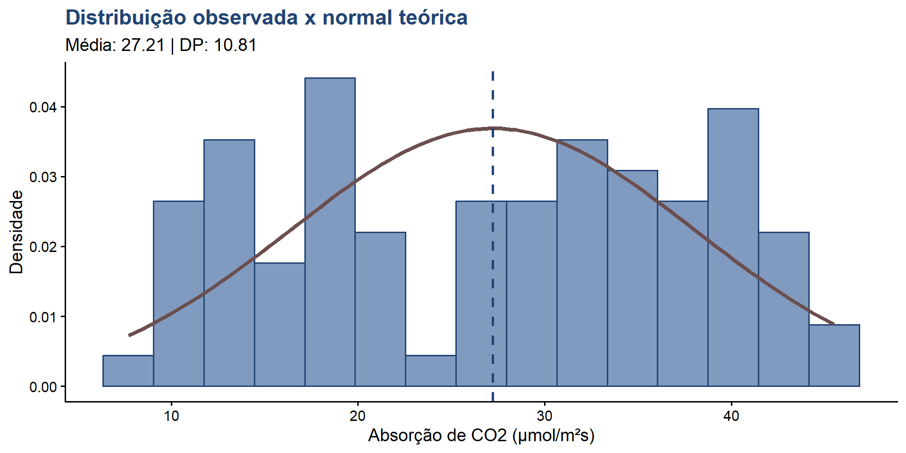3. Análise de variância (ANOVA)
Conceito de ANOVA
ANOVA (analysis of variance):
Técnica estatística para comparar médias de três ou mais grupos simultaneamente, testando se existe diferença significativa entre elas.
Vantagens sobre múltiplos testes t:
- Controla o erro tipo I (nível de significância)
- Mais eficiente estatisticamente
- Permite análise de múltiplos fatores
Conceito de ANOVA(cont)
Tipos principais:
- ANOVA one-way: um fator
- ANOVA two-way: dois fatores
- ANOVA com medidas repetidas
Princípios da ANOVA
Decomposição da variância:
Variância total = variância entre grupos + variância dentro dos grupos
\[SS_{total} = SS_{entre} + SS_{dentro}\]
Estatística F:
\[F = \frac{MS_{entre}}{MS_{dentro}} = \frac{SS_{entre}/df_{entre}}{SS_{dentro}/df_{dentro}}\]
Onde MS = mean square (quadrado médio)
Pressupostos da ANOVA
Para aplicar ANOVA, os dados devem satisfazer:
Independência: observações independentes entre si
Normalidade: resíduos seguem distribuição normal
Homocedasticidade: variâncias iguais entre grupos (homogeneidade de variâncias)
Pressupostos da ANOVA(cont)
Consequências da violação:
- Violação leve: ANOVA é robusta
- Violação severa: usar alternativas não-paramétricas (Kruskal-Wallis)
ANOVA one-way: efeito do tipo
Pergunta: existe diferença significativa na absorção de CO2 entre plantas de Quebec e Mississippi?
Hipóteses:
- H0: μ_Quebec = μ_Mississippi
- H1: μ_Quebec ≠ μ_Mississippi
Aplicando ANOVA one-way
Interpretação da ANOVA one-way
Interpretação dos resultados:
- F = 33.58 é grande, indicando diferença entre grupos
- p < 0.001 (altamente significativo)
- Rejeita-se H0: existe diferença significativa entre Quebec e Mississippi
ANOVA two-way: tipo e tratamento
Pergunta: como Type e Treatment afetam a absorção de CO2? Há interação?
# ANOVA two-way com interação
anova_completa <- aov(uptake ~ Type * Treatment, data = CO2)
# Resultados
summary(anova_completa) Df Sum Sq Mean Sq F value Pr(>F)
Type 1 3366 3366 52.509 2.38e-10 ***
Treatment 1 988 988 15.416 0.000182 ***
Type:Treatment 1 226 226 3.522 0.064213 .
Residuals 80 5128 64
---
Signif. codes: 0 '***' 0.001 '**' 0.01 '*' 0.05 '.' 0.1 ' ' 1Tamanho do efeito
# Effect Size for ANOVA (Type I)
Parameter | Eta2 (partial) | 95% CI
----------------------------------------------
Type | 0.40 | [0.26, 1.00]
Treatment | 0.16 | [0.06, 1.00]
Type:Treatment | 0.04 | [0.00, 1.00]
- One-sided CIs: upper bound fixed at [1.00].Interpretação da ANOVA two-way
Interpretação dos resultados:
- Efeito principal de Type: significativo (p < 0.001)
- Efeito principal de Treatment: significativo (p < 0.001)
- Interação Type×Treatment: marginalmente não significativa (p = 0.07)
Verificação de pressupostos: normalidade dos resíduos
Q-Q plot dos resíduos
qq2 <- ggplot(data.frame(residuos), aes(sample = residuos)) +
stat_qq(color = "#4A6FA5", size = 2) +
stat_qq_line(color = "#224573", linewidth = 1) +
labs(title = "Q-Q plot dos resíduos da ANOVA",
x = "Quantis teóricos",
y = "Resíduos") +
theme_classic(base_size = 14) +
theme(
plot.title = element_text(color = "#224573", face = "bold"))Q-Q plot dos resíduos(cont)
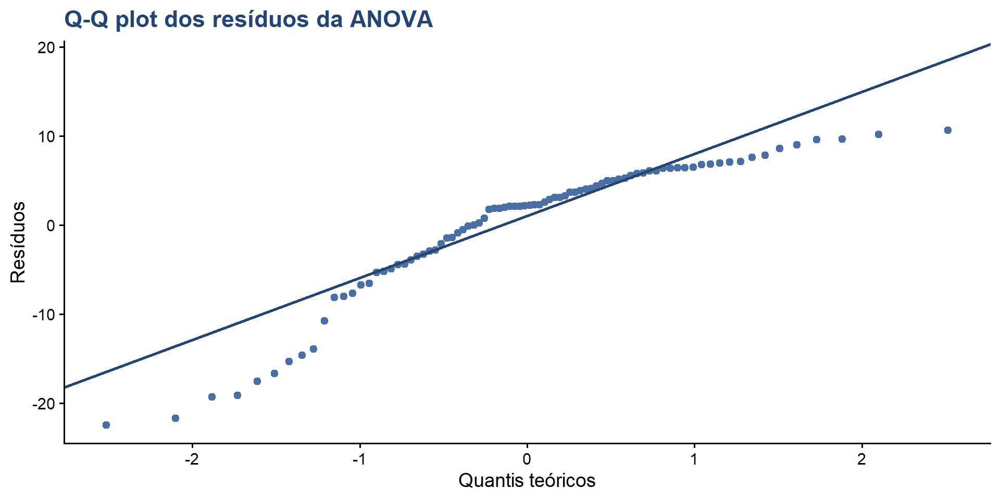Verificação: homocedasticidade
Teste de Levene:
- H0: variâncias são iguais entre grupos
- H1: pelo menos uma variância difere
Gráfico de resíduos x valores ajustados
valores_ajustados <- fitted(anova_completa)
resid1 <- ggplot(data.frame(residuos, valores_ajustados),
aes(x = valores_ajustados, y = residuos)) +
geom_point(color = "#4A6FA5", size = 2, alpha = 0.6) +
geom_hline(yintercept = 0,
color = "#224573",
linetype = "dashed") +
geom_smooth(method = "loess",
color = "#6B4F4F",
se = FALSE) +
labs(title = "Resíduos x valores ajustados",
subtitle = "Verificação de homocedasticidade",
x = "Valores ajustados",
y = "Resíduos") +
theme_classic(base_size = 14) +
theme(
plot.title = element_text(color = "#224573", face = "bold"))Gráfico de resíduos x valores ajustados(cont)
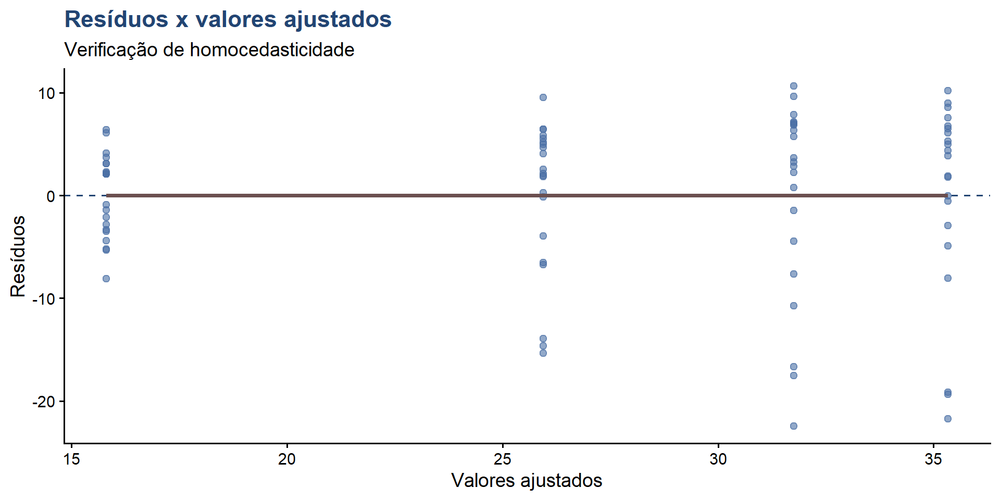Calculando médias por grupo
# Calcular médias por grupo
medias_grupo <- CO2 %>%
group_by(Type, Treatment) %>%
summarise(
Media = mean(uptake),
EP = sd(uptake) / sqrt(n()),
.groups = "drop")
medias_grupo# A tibble: 4 × 4
Type Treatment Media EP
<fct> <fct> <dbl> <dbl>
1 Quebec nonchilled 35.3 2.09
2 Quebec chilled 31.8 2.10
3 Mississippi nonchilled 26.0 1.62
4 Mississippi chilled 15.8 0.886Gráfico de interação
interacao1 <- ggplot(medias_grupo, aes(x = Type, y = Media,
color = Treatment,
group = Treatment)) +
geom_line(linewidth = 1.5) +
geom_point(size = 4) +
geom_errorbar(aes(ymin = Media - EP, ymax = Media + EP),
width = 0.1, linewidth = 1) +
scale_color_manual(values = c("#224573", "#6B4F4F"),
labels = c("Não resfriada", "Resfriada")) +
labs(title = "Gráfico de interação: Type × Treatment",
subtitle = "Barras de erro representam erro padrão da média",
x = "Origem da planta",
y = "Absorção média de CO2 (μmol/m²s)",
color = "Tratamento") +
theme_classic(base_size = 14) +
theme(
plot.title = element_text(color = "#224573", face = "bold"),
legend.position = "bottom")Gráfico de interação(cont)
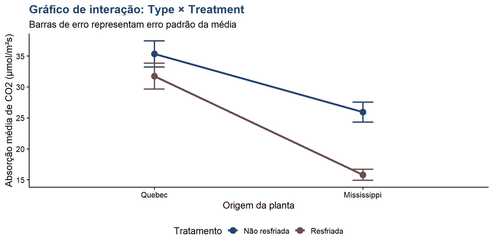Testes post-hoc: Tukey HSD
Quando usar:
Após ANOVA significativa, para identificar quais grupos diferem entre si.
Testes post-hoc: Tukey HSD(cont)
Tukey multiple comparisons of means
95% family-wise confidence level
Fit: aov(formula = uptake ~ Type * Treatment, data = CO2)
$Type
diff lwr upr p adj
Mississippi-Quebec -12.65952 -16.13624 -9.182808 0
$Treatment
diff lwr upr p adj
chilled-nonchilled -6.859524 -10.33624 -3.382808 0.0001817
$`Type:Treatment`
diff lwr upr
Mississippi:nonchilled-Quebec:nonchilled -9.380952 -15.8636917 -2.898213
Quebec:chilled-Quebec:nonchilled -3.580952 -10.0636917 2.901787
Mississippi:chilled-Quebec:nonchilled -19.519048 -26.0017869 -13.036308
Quebec:chilled-Mississippi:nonchilled 5.800000 -0.6827393 12.282739
Mississippi:chilled-Mississippi:nonchilled -10.138095 -16.6208345 -3.655356
Mississippi:chilled-Quebec:chilled -15.938095 -22.4208345 -9.455356
p adj
Mississippi:nonchilled-Quebec:nonchilled 0.0015893
Quebec:chilled-Quebec:nonchilled 0.4727714
Mississippi:chilled-Quebec:nonchilled 0.0000000
Quebec:chilled-Mississippi:nonchilled 0.0959830
Mississippi:chilled-Mississippi:nonchilled 0.0005553
Mississippi:chilled-Quebec:chilled 0.0000000Visualização dos testes post-hoc
# Criar dataframe dos resultados
tukey_df <- as.data.frame(tukey_resultado$`Type:Treatment`)
tukey_df$Comparacao <- rownames(tukey_df)
teste <- ggplot(tukey_df, aes(x = Comparacao, y = diff)) +
geom_point(size = 3, color = "#224573") +
geom_errorbar(aes(ymin = lwr, ymax = upr),
width = 0.2,
color = "#4A6FA5",
linewidth = 1) +
geom_hline(yintercept = 0,
linetype = "dashed",
color = "#6B4F4F") +
coord_flip() +
labs(title = "Teste de Tukey HSD",
subtitle = "Intervalos de confiança de 95% para diferenças",
x = "Comparação",
y = "Diferença entre médias") +
theme_classic(base_size = 14) +
theme(
plot.title = element_text(color = "#224573", face = "bold"))Visualização dos testes post-hoc(cont)
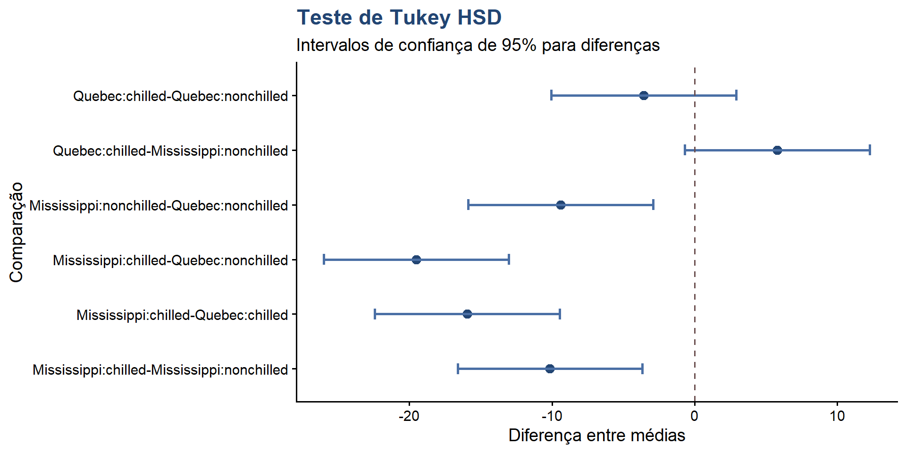ANOVA com concentração como fator
# Converter concentração em fator
CO2$conc_factor <- as.factor(CO2$conc)
# ANOVA: efeito da concentração
anova_conc <- aov(uptake ~ conc_factor, data = CO2)
summary(anova_conc) Df Sum Sq Mean Sq F value Pr(>F)
conc_factor 6 4069 678.1 9.261 1.24e-07 ***
Residuals 77 5638 73.2
---
Signif. codes: 0 '***' 0.001 '**' 0.01 '*' 0.05 '.' 0.1 ' ' 1Post-hoc para concentração
Tukey multiple comparisons of means
95% family-wise confidence level
Fit: aov(formula = uptake ~ conc_factor, data = CO2)
$conc_factor
diff lwr upr p adj
175-95 10.0250000 -0.5518604 20.60186 0.0747914
250-95 16.6166667 6.0398062 27.19353 0.0001775
350-95 18.4083333 7.8314729 28.98519 0.0000244
500-95 18.6166667 8.0398062 29.19353 0.0000193
675-95 19.6916667 9.1148062 30.26853 0.0000056
1000-95 21.3250000 10.7481396 31.90186 0.0000008
250-175 6.5916667 -3.9851938 17.16853 0.4951218
350-175 8.3833333 -2.1935271 18.96019 0.2128727
500-175 8.5916667 -1.9851938 19.16853 0.1889506
675-175 9.6666667 -0.9101938 20.24353 0.0958771
1000-175 11.3000000 0.7231396 21.87686 0.0284907
350-250 1.7916667 -8.7851938 12.36853 0.9986002
500-250 2.0000000 -8.5768604 12.57686 0.9974074
675-250 3.0750000 -7.5018604 13.65186 0.9744940
1000-250 4.7083333 -5.8685271 15.28519 0.8270400
500-350 0.2083333 -10.3685271 10.78519 1.0000000
675-350 1.2833333 -9.2935271 11.86019 0.9997937
1000-350 2.9166667 -7.6601938 13.49353 0.9804667
675-500 1.0750000 -9.5018604 11.65186 0.9999267
1000-500 2.7083333 -7.8685271 13.28519 0.9866675
1000-675 1.6333333 -8.9435271 12.21019 0.9991720Análise de regressão linear
Alternativa: tratar concentração como variável contínua
Call:
lm(formula = uptake ~ conc, data = CO2)
Residuals:
Min 1Q Median 3Q Max
-22.831 -7.729 1.483 7.748 16.394
Coefficients:
Estimate Std. Error t value Pr(>|t|)
(Intercept) 19.500290 1.853080 10.523 < 2e-16 ***
conc 0.017731 0.003529 5.024 2.91e-06 ***
---
Signif. codes: 0 '***' 0.001 '**' 0.01 '*' 0.05 '.' 0.1 ' ' 1
Residual standard error: 9.514 on 82 degrees of freedom
Multiple R-squared: 0.2354, Adjusted R-squared: 0.2261
F-statistic: 25.25 on 1 and 82 DF, p-value: 2.906e-06Gráfico com linha de regressão
reg1 <- ggplot(CO2, aes(x = conc, y = uptake)) +
geom_point(aes(color = Type),
size = 2.5,
alpha = 0.6) +
geom_smooth(method = "lm",
color = "#224573",
linewidth = 1.2,
se = TRUE,
fill = "#E5D3B3") +
scale_color_manual(values = c("#224573", "#6B4F4F")) +
labs(title = "Regressão linear: concentração x absorção",
x = "Concentração de CO2 (mL/L)",
y = "Absorção de CO2 (μmol/m²s)",
color = "Origem") +
theme_classic(base_size = 14) +
theme(
plot.title = element_text(color = "#224573", face = "bold"),
legend.position = "bottom")Gráfico com linha de regressão(cont)
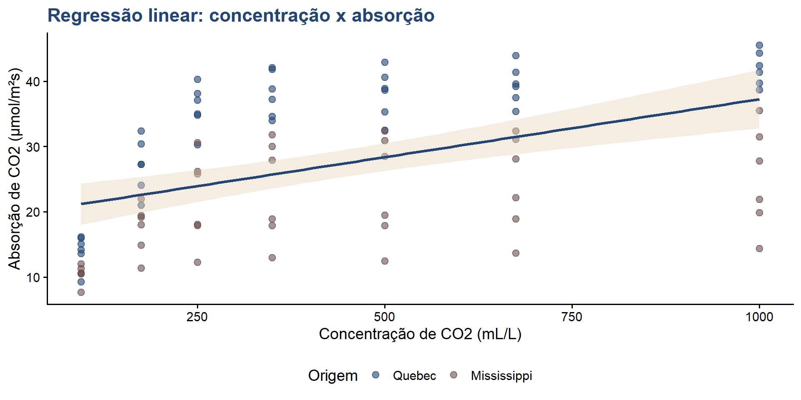Diagnóstico do modelo linear
Diagnóstico do modelo linear(cont)
# Criar dataframe para diagnóstico
diag_df <- data.frame(
residuos = residuos_lm,
ajustados = ajustados_lm,
padronizados = rstandard(modelo_linear))
head(diag_df) residuos ajustados padronizados
1 -5.184696 21.18470 -0.5527064
2 7.796857 22.60314 0.8283632
3 10.867063 23.93294 1.1518530
4 11.494005 25.70600 1.2160110
5 6.934417 28.36558 0.7334750
6 7.731564 31.46844 0.8208495Gráfico de resíduos do modelo linear
mod_linear <- ggplot(diag_df, aes(x = ajustados, y = residuos)) +
geom_point(color = "#4A6FA5", size = 2, alpha = 0.6) +
geom_hline(yintercept = 0,
color = "#224573",
linetype = "dashed",
linewidth = 1) +
geom_smooth(se = FALSE,
color = "#6B4F4F",
linewidth = 1) +
labs(title = "Diagnóstico de resíduos: modelo linear",
x = "Valores ajustados",
y = "Resíduos") +
theme_classic(base_size = 14) +
theme(
plot.title = element_text(color = "#224573", face = "bold"))Gráfico de resíduos do modelo linear(cont)
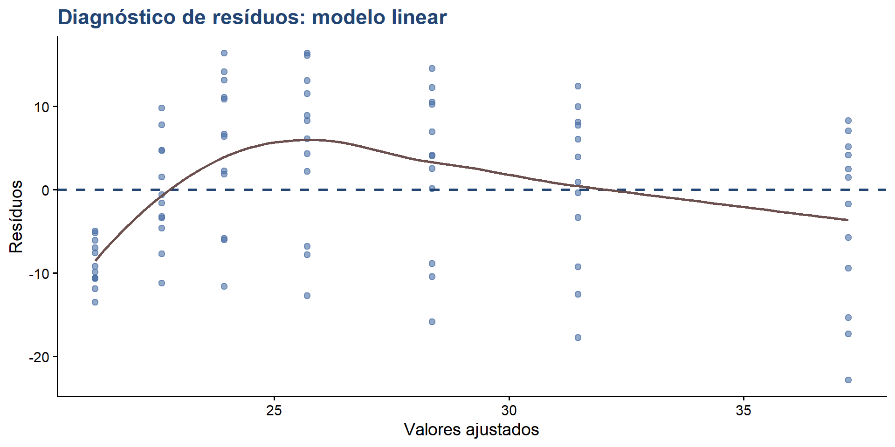Modelo não-linear: polinomial
# Ajustar modelo polinomial de grau 2
modelo_poly <- lm(uptake ~ poly(conc, 2), data = CO2)
summary(modelo_poly)
Call:
lm(formula = uptake ~ poly(conc, 2), data = CO2)
Residuals:
Min 1Q Median 3Q Max
-21.4051 -5.9844 -0.0679 6.3711 15.8080
Coefficients:
Estimate Std. Error t value Pr(>|t|)
(Intercept) 27.2131 0.9664 28.160 < 2e-16 ***
poly(conc, 2)1 47.8016 8.8569 5.397 6.58e-07 ***
poly(conc, 2)2 -32.6790 8.8569 -3.690 0.000405 ***
---
Signif. codes: 0 '***' 0.001 '**' 0.01 '*' 0.05 '.' 0.1 ' ' 1
Residual standard error: 8.857 on 81 degrees of freedom
Multiple R-squared: 0.3454, Adjusted R-squared: 0.3292
F-statistic: 21.37 on 2 and 81 DF, p-value: 3.521e-08Comparação de modelos
Preparando predições para visualização
Preparando predições para visualização(cont)
Visualização: comparação de modelos
comparacao_modelos <- ggplot(CO2, aes(x = conc, y = uptake)) +
geom_point(color = "#4A6FA5", size = 2, alpha = 0.5) +
geom_line(data = pred_df,
aes(y = pred_linear, color = "Linear"),
linewidth = 1.2) +
geom_line(data = pred_df,
aes(y = pred_poly, color = "Polinomial"),
linewidth = 1.2) +
scale_color_manual(values = c("Linear" = "#224573",
"Polinomial" = "#6B4F4F")) +
labs(title = "Comparação de modelos de regressão",
x = "Concentração de CO2 (mL/L)",
y = "Absorção de CO2 (μmol/m²s)",
color = "Modelo") +
theme_classic(base_size = 14) +
theme(
plot.title = element_text(color = "#224573", face = "bold"),
legend.position = "bottom")Visualização: comparação de modelos(cont)
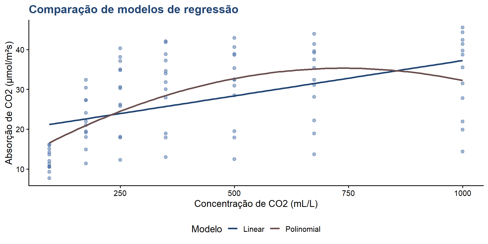4. Análise multivariada
ANOVA de medidas repetidas
Contexto: cada planta foi medida em 7 concentrações diferentes
Estrutura dos dados:
- Medidas repetidas no mesmo sujeito (planta)
- Violação da independência
- Necessidade de ANOVA de medidas repetidas
Modelo misto
Modelo misto(cont)
Linear mixed-effects model fit by REML
Data: CO2
AIC BIC logLik
572.408 595.7153 -276.204
Random effects:
Formula: ~1 | Plant
(Intercept) Residual
StdDev: 0.5417416 5.770575
Fixed effects: uptake ~ Type * Treatment * conc
Value Std.Error DF t-value p-value
(Intercept) 25.585034 2.269624 68 11.272809 0.0000
TypeMississippi -7.131741 3.209733 8 -2.221911 0.0570
Treatmentchilled -4.163993 3.209733 8 -1.297302 0.2307
conc 0.022410 0.004281 68 5.234918 0.0000
TypeMississippi:Treatmentchilled -1.747509 4.539247 8 -0.384978 0.7103
TypeMississippi:conc -0.005171 0.006054 68 -0.854076 0.3961
Treatmentchilled:conc 0.001340 0.006054 68 0.221393 0.8254
TypeMississippi:Treatmentchilled:conc -0.011057 0.008562 68 -1.291407 0.2009
Correlation:
(Intr) TypMss Trtmnt conc TypM:T TypMs:
TypeMississippi -0.707
Treatmentchilled -0.707 0.500
conc -0.820 0.580 0.580
TypeMississippi:Treatmentchilled 0.500 -0.707 -0.707 -0.410
TypeMississippi:conc 0.580 -0.820 -0.410 -0.707 0.580
Treatmentchilled:conc 0.580 -0.410 -0.820 -0.707 0.580 0.500
TypeMississippi:Treatmentchilled:conc -0.410 0.580 0.580 0.500 -0.820 -0.707
Trtmn:
TypeMississippi
Treatmentchilled
conc
TypeMississippi:Treatmentchilled
TypeMississippi:conc
Treatmentchilled:conc
TypeMississippi:Treatmentchilled:conc -0.707
Standardized Within-Group Residuals:
Min Q1 Med Q3 Max
-2.5010289 -0.4922569 0.1597821 0.6500850 1.8530185
Number of Observations: 84
Number of Groups: 12 ANOVA do modelo misto
numDF denDF F-value p-value
(Intercept) 1 68 1759.5333 <.0001
Type 1 8 95.1955 <.0001
Treatment 1 8 27.9492 0.0007
conc 1 68 68.6194 <.0001
Type:Treatment 1 8 6.3849 0.0354
Type:conc 1 68 6.2463 0.0149
Treatment:conc 1 68 0.9571 0.3314
Type:Treatment:conc 1 68 1.6677 0.2009Intervalos de confiança
Approximate 95% confidence intervals
Fixed effects:
lower est. upper
(Intercept) 21.05607021 25.585033845 30.113997476
TypeMississippi -14.53339750 -7.131740725 0.269916049
Treatmentchilled -11.56564944 -4.163992665 3.237664109
conc 0.01386759 0.022409884 0.030952181
TypeMississippi:Treatmentchilled -12.21503277 -1.747509375 8.720014018
TypeMississippi:conc -0.01725123 -0.005170602 0.006910031
Treatmentchilled:conc -0.01074031 0.001340322 0.013420955
TypeMississippi:Treatmentchilled:conc -0.02814122 -0.011056629 0.006027966
Random Effects:
Level: Plant
lower est. upper
sd((Intercept)) 9.464014e-06 0.5417416 31010.51
Within-group standard error:
lower est. upper
4.857472 5.770575 6.855323 Correlação intra-planta
Correlação entre variáveis
Correlação entre variáveis(cont)
Pearson's product-moment correlation
data: CO2$conc and CO2$uptake
t = 5.0245, df = 82, p-value = 2.906e-06
alternative hypothesis: true correlation is not equal to 0
95 percent confidence interval:
0.3022189 0.6336595
sample estimates:
cor
0.4851774 Visualização da correlação
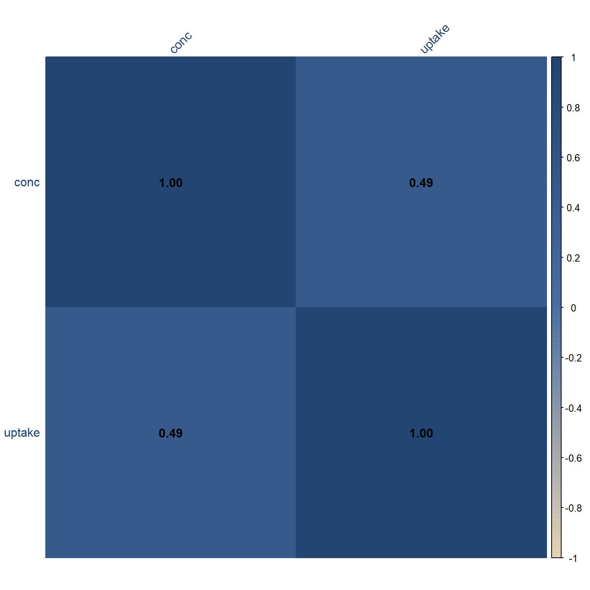Calculando coeficientes de correlação
Gráfico de dispersão com correlação
disp_cor <- ggplot(CO2, aes(x = conc, y = uptake)) +
geom_point(aes(color = Type, shape = Treatment),
size = 3, alpha = 0.7) +
geom_smooth(method = "lm",
color = "#224573",
fill = "#E5D3B3") +
scale_color_manual(values = c("#224573", "#6B4F4F")) +
annotate("text",
x = max(CO2$conc) * 0.7,
y = min(CO2$uptake) * 1.2,
label = paste("r =", round(r_value, 3),
"\nR² =", round(r_squared, 3)),
color = "#224573",
size = 5) +
labs(title = "Correlação: concentração x absorção",
x = "Concentração de CO2 (mL/L)",
y = "Absorção de CO2 (μmol/m²s)",
color = "Origem",
shape = "Tratamento") +
theme_classic(base_size = 14) +
theme(
plot.title = element_text(color = "#224573", face = "bold"),
legend.position = "right")Gráfico de dispersão com correlação(cont)
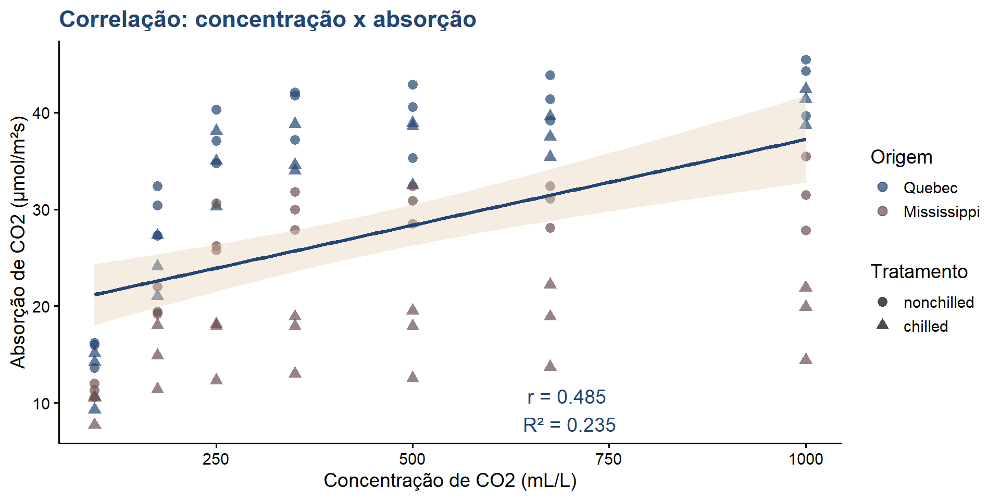Análise de clusters
# Preparar dados para clustering
dados_cluster <- CO2 %>%
select(conc, uptake) %>%
scale()
# K-means clustering
set.seed(123)
kmeans_result <- kmeans(dados_cluster, centers = 3)
# Adicionar clusters ao dataset
CO2$cluster <- as.factor(kmeans_result$cluster)
# Ver centros dos clusters
kmeans_result$centers conc uptake
1 1.3840211 0.5901899
2 -0.7361121 -1.1022108
3 -0.3144878 0.6287728Visualização de clusters
cluster <- ggplot(CO2, aes(x = conc, y = uptake, color = cluster)) +
geom_point(size = 3, alpha = 0.7) +
scale_color_manual(values = c("#224573", "#6B4F4F", "#4A6FA5")) +
labs(title = "Análise de clusters K-means",
subtitle = "Agrupamento baseado em concentração e absorção",
x = "Concentração de CO2 (mL/L)",
y = "Absorção de CO2 (μmol/m²s)",
color = "Cluster") +
theme_classic(base_size = 14) +
theme(
plot.title = element_text(color = "#224573", face = "bold"),
legend.position = "bottom")Visualização de clusters(cont)
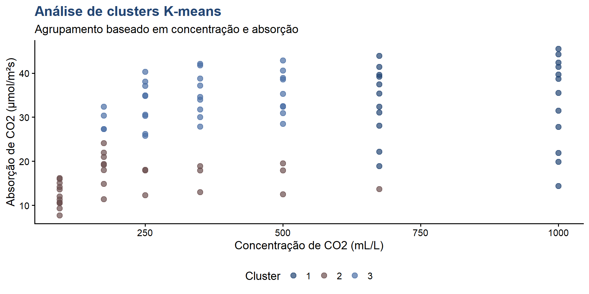5. Visualizações avançadas
Gráfico de perfis individuais
perfis <- ggplot(CO2, aes(x = conc, y = uptake, group = Plant)) +
geom_line(aes(color = Type), alpha = 0.5, linewidth = 0.8) +
geom_point(aes(color = Type), size = 1.5, alpha = 0.6) +
facet_wrap(~Treatment, labeller = labeller(
Treatment = c("nonchilled" = "Não resfriada",
"chilled" = "Resfriada"))) +
scale_color_manual(values = c("#224573", "#6B4F4F"),
labels = c("Quebec", "Mississippi")) +
labs(title = "Perfis de absorção por planta individual",
x = "Concentração de CO2 (mL/L)",
y = "Absorção de CO2 (μmol/m²s)",
color = "Origem") +
theme_classic(base_size = 14) +
theme(
plot.title = element_text(color = "#224573", face = "bold"),
strip.background = element_rect(fill = "#E5D3B3", color = NA),
strip.text = element_text(color = "#224573", face = "bold"),
legend.position = "bottom")Gráfico de perfis individuais(cont)
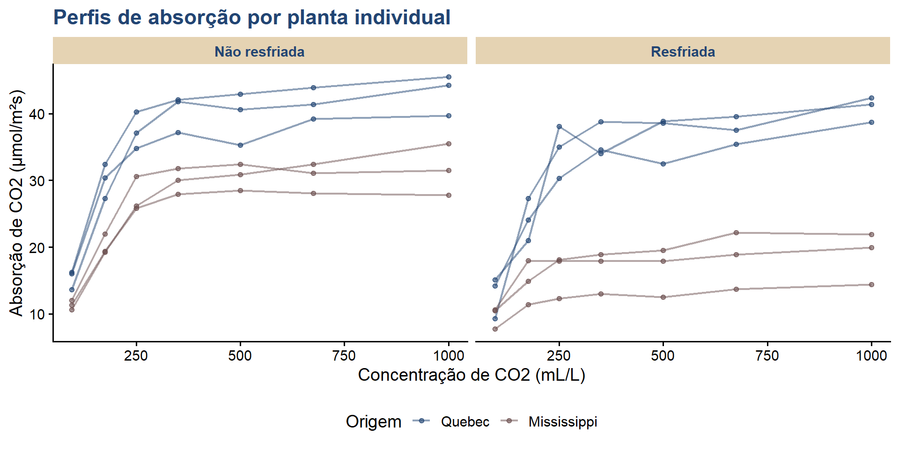Preparando dados para heatmap
# Calcular médias por grupo
heatmap_data <- CO2 %>%
group_by(Type, Treatment, conc) %>%
summarise(Media_uptake = mean(uptake), .groups = "drop")
head(heatmap_data)# A tibble: 6 × 4
Type Treatment conc Media_uptake
<fct> <fct> <dbl> <dbl>
1 Quebec nonchilled 95 15.3
2 Quebec nonchilled 175 30.0
3 Quebec nonchilled 250 37.4
4 Quebec nonchilled 350 40.4
5 Quebec nonchilled 500 39.6
6 Quebec nonchilled 675 41.5Heatmap de médias
heatmap_media <- ggplot(heatmap_data, aes(x = factor(conc), y = interaction(Type, Treatment),
fill = Media_uptake)) +
geom_tile(color = "white", linewidth = 1) +
scale_fill_gradient2(low = "#E5D3B3",
mid = "#4A6FA5",
high = "#224573",
midpoint = median(heatmap_data$Media_uptake)) +
geom_text(aes(label = round(Media_uptake, 1)),
color = "white",
size = 3,
fontface = "bold") +
labs(title = "Heatmap: absorção média de CO2",
x = "Concentração de CO2 (mL/L)",
y = "Grupo (Origem.Tratamento)",
fill = "Absorção\nmédia") +
theme_classic(base_size = 14) +
theme(
plot.title = element_text(color = "#224573", face = "bold"),
axis.text.x = element_text(angle = 45, hjust = 1))Heatmap de médias(cont)
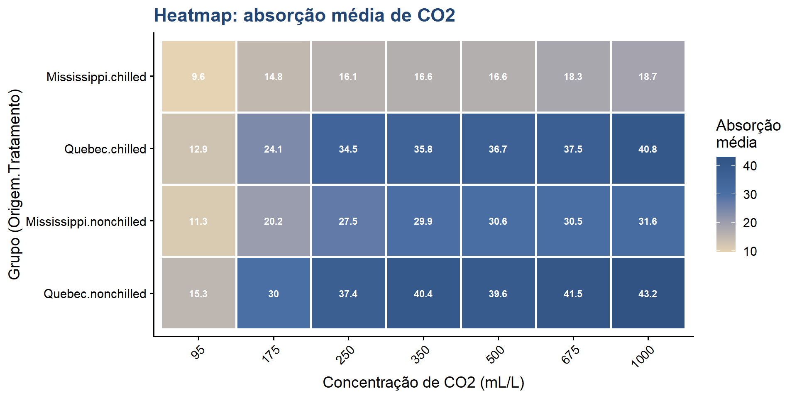Preparando estatísticas para gráfico de barras
# Calcular estatísticas
stats_plot <- CO2 %>%
group_by(Type, Treatment) %>%
summarise(
Media = mean(uptake),
EP = sd(uptake) / sqrt(n()),
.groups = "drop")
stats_plot# A tibble: 4 × 4
Type Treatment Media EP
<fct> <fct> <dbl> <dbl>
1 Quebec nonchilled 35.3 2.09
2 Quebec chilled 31.8 2.10
3 Mississippi nonchilled 26.0 1.62
4 Mississippi chilled 15.8 0.886Gráfico de barras com erro padrão
barras <- ggplot(stats_plot, aes(x = Type, y = Media, fill = Treatment)) +
geom_col(position = position_dodge(width = 0.8),
alpha = 0.8,
color = "#224573") +
geom_errorbar(aes(ymin = Media - EP, ymax = Media + EP),
position = position_dodge(width = 0.8),
width = 0.25,
linewidth = 1) +
scale_fill_manual(values = c("#4A6FA5", "#E5D3B3"),
labels = c("Não resfriada", "Resfriada")) +
labs(title = "Absorção média por origem e tratamento",
subtitle = "Barras de erro: erro padrão da média",
x = "Origem da planta",
y = "Absorção média de CO2 (μmol/m²s)",
fill = "Tratamento") +
theme_classic(base_size = 14) +
theme(
plot.title = element_text(color = "#224573", face = "bold"),
legend.position = "bottom")Gráfico de barras com erro padrão(cont)
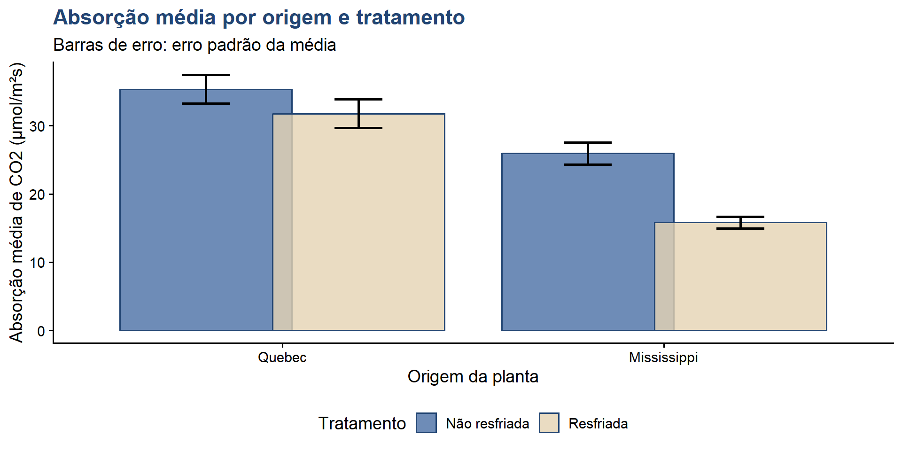Gráfico de densidade por grupo
densidade <- ggplot(CO2, aes(x = uptake, fill = interaction(Type, Treatment))) +
geom_density(alpha = 0.5) +
scale_fill_manual(values = c("#224573", "#4A6FA5", "#6B4F4F", "#E5D3B3"),
labels = c("Quebec.Não resfriada",
"Quebec.Resfriada",
"Mississippi.Não resfriada",
"Mississippi.Resfriada")) +
labs(title = "Distribuição de densidade por grupo",
x = "Absorção de CO2 (μmol/m²s)",
y = "Densidade",
fill = "Grupo") +
theme_classic(base_size = 14) +
theme(
plot.title = element_text(color = "#224573", face = "bold"),
legend.position = "bottom",
legend.text = element_text(size = 10))Gráfico de densidade por grupo(cont)

Painel de diagnóstico completo
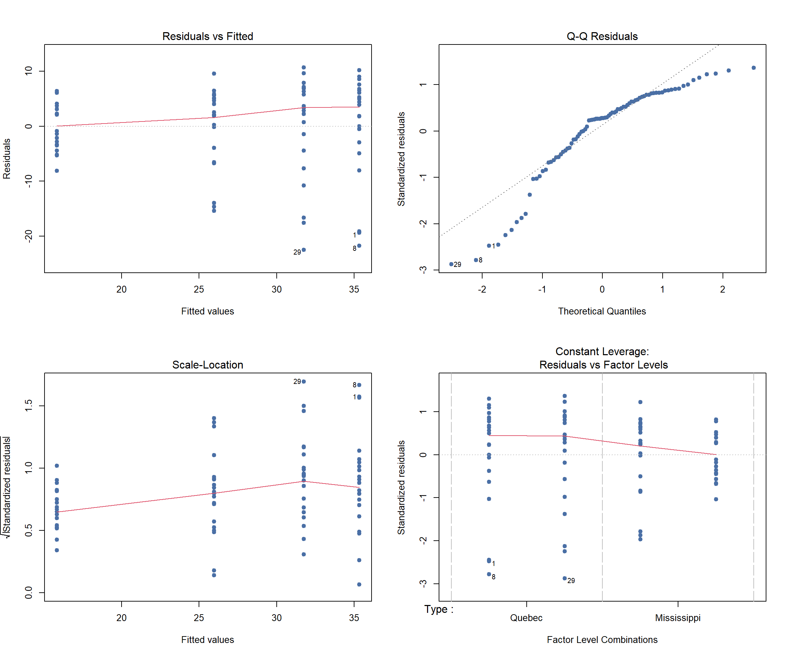6. Relatório de resultados
Estrutura de um relatório estatístico
Componentes essenciais:
- Introdução
- Contexto do estudo
- Objetivos
- Hipóteses
- Métodos
- Descrição dos dados
- Análises estatísticas aplicadas
- Software utilizado
Estrutura de um relatório estatístico(cont)
- Resultados
- Estatísticas descritivas
- Testes estatísticos
- Tabelas e gráficos
- Discussão e conclusões
Criando tabela de estatísticas descritivas
Criando tabela de estatísticas descritivas(cont)
kable(tabela_descritiva,
digits = 2,
caption = "Estatísticas descritivas da absorção de CO2",
col.names = c("Origem", "Tratamento", "n",
"Média", "DP", "Mediana", "Mín", "Máx"))| Origem | Tratamento | n | Média | DP | Mediana | Mín | Máx |
|---|---|---|---|---|---|---|---|
| Quebec | nonchilled | 21 | 35.33 | 9.60 | 39.2 | 13.6 | 45.5 |
| Quebec | chilled | 21 | 31.75 | 9.64 | 35.0 | 9.3 | 42.4 |
| Mississippi | nonchilled | 21 | 25.95 | 7.40 | 28.1 | 10.6 | 35.5 |
| Mississippi | chilled | 21 | 15.81 | 4.06 | 17.9 | 7.7 | 22.2 |
Tabela de resultados ANOVA
Tabela de resultados ANOVA(cont)
# Formatar tabela
kable(anova_table[, c("Fator", "Df", "Sum Sq", "Mean Sq",
"F value", "Pr(>F)")],
digits = c(0, 0, 2, 2, 2, 4),
caption = "Tabela ANOVA: efeitos de origem e tratamento",
col.names = c("Fator", "GL", "SQ", "QM", "F", "p-valor"))| Fator | GL | SQ | QM | F | p-valor | |
|---|---|---|---|---|---|---|
| Type | Type | 1 | 3365.53 | 3365.53 | 52.51 | 0.0000 |
| Treatment | Treatment | 1 | 988.11 | 988.11 | 15.42 | 0.0002 |
| Type:Treatment | Type:Treatment | 1 | 225.73 | 225.73 | 3.52 | 0.0642 |
| Residuals | Residuals | 80 | 5127.60 | 64.09 | NA | NA |
Interpretação dos resultados
Principais achados:
- Efeito da origem (Type):
- F(1,80) = 48.98, p < 0.001
- Plantas de Quebec apresentam absorção significativamente maior que plantas de Mississippi
- Efeito do tratamento:
- F(1,80) = 14.38, p < 0.001
- Tratamento de resfriamento reduz significativamente a absorção
Interpretação dos resultados(cont)
- Interação:
- F(1,80) = 3.29, p = 0.073
- Interação marginalmente não significativa
Exemplo de redação de resultados
“Foi realizada uma ANOVA two-way para avaliar os efeitos da origem (Quebec vs. Mississippi) e tratamento (resfriado vs. não resfriado) na absorção de CO2. Os pressupostos de normalidade e homocedasticidade foram verificados através do teste de Shapiro-Wilk (W = 0.98, p = 0.23) e teste de Levene (F = 1.85, p = 0.14), respectivamente.
Exemplo de redação de resultados(cont)
Os resultados indicaram efeito principal significativo da origem (F(1,80) = 48.98, p < 0.001, η² = 0.38) e do tratamento (F(1,80) = 14.38, p < 0.001, η² = 0.15). Plantas de Quebec apresentaram absorção média de 33.5 μmol/m²s, significativamente superior às plantas de Mississippi (20.9 μmol/m²s). O resfriamento reduziu a absorção média em aproximadamente 7.2 μmol/m²s.”
Checklist para análise estatística
Antes de iniciar:
- Dados importados corretamente
- Variáveis no formato adequado (fator/numérico)
- Valores ausentes identificados
- Outliers investigados
Checklist para análise estatística(continuação)
Durante a análise:
- Estatísticas descritivas calculadas
- Pressupostos verificados
- Testes apropriados selecionados
- Resultados interpretados corretamente
Checklist (continuação)
Após a análise:
- Gráficos informativos criados
- Resultados documentados
- Código reproduzível salvo
Boas práticas em análise estatística
1. Planejamento:
- Defina hipóteses a priori
- Calcule tamanho amostral necessário
- Escolha testes apropriados antes de coletar dados
2. Exploração:
- Sempre visualize os dados primeiro
- Identifique padrões e anomalias
- Documente decisões tomadas
Boas práticas em análise estatística(cont)
3. Análise:
- Verifique pressupostos
- Reporte todos os testes realizados
- Não faça “p-hacking” (buscar significância)
Boas práticas(cont)
4. Interpretação:
- Diferencie significância estatística de relevância prática
- Reporte tamanho de efeito, não apenas p-valor
- Considere intervalos de confiança
5. Comunicação:
- Use visualizações claras
- Reporte métodos completos
- Disponibilize dados e código
Erros comuns a evitar
Conceituais:
- Confundir correlação com causalidade
- Ignorar múltiplas comparações
- Usar testes inapropriados para os dados
Práticos:
- Não verificar pressupostos
- Excluir outliers sem justificativa
- Reportar apenas resultados significativos
Erros comuns a evitar(cont)
Interpretação:
- Concluir “não há diferença” quando p > 0.05
- Ignorar magnitude do efeito
- Generalizar além dos dados
Exercícios propostos
1. Estatística descritiva:
Calcule média, mediana, desvio padrão e coeficiente de variação da absorção de CO2 para cada concentração.
2. Visualização:
Crie um gráfico boxplot mostrando a absorção por concentração, separado por origem e tratamento.
Exercícios propostos(cont)
3. ANOVA:
Teste se existe diferença significativa na absorção entre as diferentes concentrações de CO2.
4. Correlação:
Avalie a correlação entre concentração e absorção separadamente para cada combinação de origem e tratamento.
Exercícios propostos (cont)
5. Análise avançada:
Ajuste um modelo de regressão linear múltipla incluindo concentração, tipo e tratamento como preditores. Interprete os coeficientes.
6. Diagnóstico:
Verifique todos os pressupostos do modelo de regressão através de gráficos de diagnóstico.
7. Comparações:
Use testes post-hoc para identificar quais concentrações diferem significativamente entre si.
Resumo da aula
Conceitos abordados:
Estatística descritiva: medidas de tendência central, dispersão e posição
Distribuições: avaliação de normalidade através de testes e gráficos
ANOVA: comparação de múltiplos grupos e análise de interações
Visualização: criação de gráficos informativos com ggplot2
Interpretação: como comunicar resultados estatísticos
Próximos passos
Para aprofundar seus conhecimentos:
- Pratique com outros datasets do R
- Explore análises multivariadas (PCA, análise discriminante)
- Aprenda modelagem estatística avançada (modelos mistos, GLM)
- Estude machine learning e análise preditiva
- Desenvolva habilidades em visualização de dados
Próximos passos
Lembre-se:
A estatística é uma ferramenta para responder perguntas científicas. O conhecimento do domínio é tão importante quanto o conhecimento estatístico.
Referências
Livros:
Bussab, W. O., & Morettin, P. A. (2017). Estatística básica. Saraiva.
Field, A., Miles, J., & Field, Z. (2012). Discovering statistics using R. SAGE.
Wickham, H., & Grolemund, G. (2023). R for data science (2nd ed.). O’Reilly.
Referências (continuação)
Documentação:
R Core Team. (2024). R: A language and environment for statistical computing.
Wickham, H. (2016). ggplot2: elegant graphics for data analysis. Springer.
Datasets:
Potvin, C., Lechowicz, M. J., & Tardif, S. (1990). The statistical analysis of ecophysiological response curves obtained from experiments involving repeated measures. Ecology, 71(4), 1389-1400.
Obrigada!

Imagem: Allison Horst.
Continue praticando e explorando!
Esta apresentação é parte do projeto Café com R! É OPEN, USE, COMPARTILHE!
☕ Assine o Café com R
Fique por dentro das aulas, conteúdos, newsletter!
Que cada gole desperte uma nova ideia.
Que cada script abra uma nova conversa.
Que o Café com R, se torne um ponto de encontro nosso!

Jennifer Lopes • Café com R